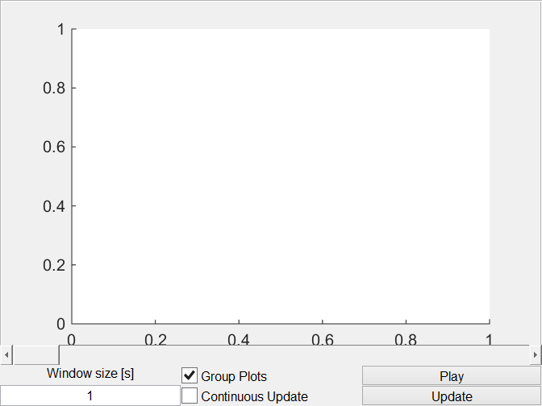

Contents
classdef audio_window_ui < handle
Properties
properties
Parent
MainObj
Name = 'Signal Window';
NChan = 0;
TotalSamples
WindowSize
CurrentSample
GroupPlots = 1;
Axes
Lines
UI
Update
Timer
TimerPeriod = 0.5;
end
Methods
methods
Plot Audio Signals Constuctor
function obj = audio_window_ui(parent, mainObj)
if nargin == 0
obj.Parent = figure('Name',obj.Name,'NumberTitle','off','resize','on');
elseif nargin >= 1
if ishandle(parent)
obj.Parent = parent;
else
warning(['First argument needs to be a handle,'...
'new figure created.']);
obj.Parent = figure('Name',obj.Name,'NumberTitle','off','resize','on');
end
end
if nargin >= 2
obj.MainObj = mainObj;
else
obj.MainObj.DataBuffer = bf_data(obj.MainObj);
obj.MainObj.UI.PlotSettings = std_selector_ui(figure,obj.MainObj);
obj.MainObj.DataBuffer.setNChan(1);
obj.MainObj.DataBuffer.setTotalSamples(48000);
end
obj.UI = obj.graphicsCode();
obj.Update = @obj.pbUpdate_Callback;
obj.Axes{1} = axes('Parent',obj.UI.PanPlots);
obj.Lines(1) = line('XData', [], 'YData', [], 'Parent',obj.Axes{1});
obj.Timer = timer('TimerFcn',@obj.update,'ExecutionMode', 'fixedRate');
end
Button Update Callback
function pbUpdate_Callback(obj,~,~)
chanNames = obj.MainObj.UI.PlotSettings.ChanNames;
windowSize = str2double(obj.UI.edWindowSize.String);
if isnumeric(windowSize) && isfinite(windowSize)
obj.WindowSize = windowSize*obj.MainObj.DataBuffer.Fs;
obj.UI.edWindowSize.String = mat2str(windowSize);
end
obj.CurrentSample = round(obj.UI.slCurrentSample.Value);
[yData, obj.TotalSamples] = obj.MainObj.DataBuffer.getAudioData(...
obj.MainObj.UI.PlotSettings.ChanNames,...
obj.CurrentSample,obj.CurrentSample+obj.WindowSize);
xData = ((1:length(yData))'+obj.CurrentSample)/obj.MainObj.DataBuffer.Fs;
if obj.TotalSamples
obj.UI.slCurrentSample.Max = max(obj.TotalSamples-obj.WindowSize-1,2);
step1 = min(obj.WindowSize/2/obj.TotalSamples,0.05);
obj.UI.slCurrentSample.SliderStep = [step1 min(step1,0.1)];
end
if obj.UI.cbContinuousUpdate.Value && strcmp(obj.Timer.Running,'off')
obj.Timer.Period = obj.TimerPeriod;
start(obj.Timer);
elseif strcmp(obj.Timer.Running,'on')
stop(obj.Timer);
end
if ~isempty(yData)
newNChan = size(chanNames,2);
if obj.GroupPlots ~= obj.UI.cbGroupPlots.Value || obj.NChan ~= newNChan
obj.GroupPlots = obj.UI.cbGroupPlots.Value;
obj.NChan = newNChan;
if ~isempty(obj.Axes); delete([obj.Axes{:}]); end
if obj.GroupPlots
obj.Axes{1} = subplot(1,1,1, 'Parent',obj.UI.PanPlots);
colors1 = {'black','blue','green','red','cyan','magenta','yellow'};
for ii = 1:newNChan
obj.Lines(ii) = line('XData', xData, 'YData', yData(:,ii),...
'Parent',obj.Axes{1}, 'Color', colors1{mod(newNChan-ii+1,length(colors1))});
end
legend(obj.Axes{1},obj.MainObj.UI.PlotSettings.ChanNames);
else
for ii = 1:newNChan
axes(obj.Axes{ii});cla;
obj.Axes{ii} = subplot(newNChan,1,ii, 'Parent',obj.UI.PanPlots);
obj.Lines(ii) = line('XData', xData, 'YData', yData(:,ii),...
'Parent',obj.Axes{ii});
legend(obj.Axes{ii},obj.MainObj.UI.PlotSettings.ChanNames{ii});
end
linkaxes([obj.Axes{:}],'xy');
end
else
if obj.CurrentSample+obj.WindowSize < obj.TotalSamples
xData = ((1:length(yData))'+obj.CurrentSample)/obj.MainObj.DataBuffer.Fs;
for ii = 1:obj.NChan
set(obj.Lines(ii), 'XData', xData, 'YData', yData(:,ii));
end
else
warning('Sample window is above number of samples')
end
end
ylim1 = max(abs(yData(:)));
set(obj.Axes{1}, 'XLim', [xData(1)-2/obj.MainObj.DataBuffer.Fs xData(end)], 'YLim', [-ylim1 ylim1]);
else
obj.UI.slCurrentSample.Value = obj.UI.slCurrentSample.Min;
warning('yData is empty (audio window)')
end
end
Button Update Data Callback
function pbUpdateData_Callback(obj,~,~)
if obj.NChan ~= size(obj.MainObj.UI.PlotSettings.ChanNames,2)
obj.pbUpdate_Callback(obj);
end
windowSize = str2double(obj.UI.edWindowSize.String);
if isnumeric(windowSize) && isfinite(windowSize)
obj.WindowSize = windowSize*obj.MainObj.DataBuffer.Fs;
obj.UI.edWindowSize.String = mat2str(windowSize);
end
obj.CurrentSample = round(obj.UI.slCurrentSample.Value);
[yData, obj.TotalSamples] = obj.MainObj.DataBuffer.getAudioData(...
obj.MainObj.UI.PlotSettings.ChanNames,...
obj.CurrentSample,obj.CurrentSample+obj.WindowSize);
if obj.TotalSamples
obj.UI.slCurrentSample.Max = max(obj.TotalSamples-obj.WindowSize-1,2);
step1 = min(obj.WindowSize/2/obj.TotalSamples,1);
obj.UI.slCurrentSample.SliderStep = [step1 step1];
end
if obj.CurrentSample+obj.WindowSize < obj.TotalSamples
xData = ((1:length(yData))'+obj.CurrentSample)/obj.MainObj.DataBuffer.Fs;
for ii = 1:obj.NChan
set(obj.Lines(ii), 'XData', xData, 'YData', yData(:,ii));
end
if ~isempty(yData)
ylim1 = max(abs(yData(:)));
set(obj.Axes{1}, 'XLim', [xData(1)-2/obj.MainObj.DataBuffer.Fs xData(end)], 'YLim', [-ylim1 ylim1]);
end
else
warning('Sample window is above number of samples')
end
end
function value = update(obj,~,~)
value = 0;
while obj.CurrentSample + obj.TimerPeriod*obj.MainObj.DataBuffer.Fs+obj.WindowSize <= min(obj.MainObj.DataBuffer.CurrentSample(obj.MainObj.DataBuffer.names2inds(obj.MainObj.UI.PlotSettings.ChanNames)))
value = value + 1;
obj.UI.slCurrentSample.Value = obj.CurrentSample + obj.TimerPeriod*obj.MainObj.DataBuffer.Fs;
obj.pbUpdateData_Callback();
end
end
Button Play Callback
function pbPlay_Callback(obj,~,~)
if obj.MainObj.DataBuffer.IsInitialized
firstSample = ceil(max(1,obj.Axes{1}.XLim(1)*obj.MainObj.DataBuffer.Fs));
lastSample = floor(min(obj.MainObj.DataBuffer.TotalSamples,obj.Axes{1}.XLim(2)*obj.MainObj.DataBuffer.Fs));
obj.MainObj.DataBuffer.play(obj.MainObj.UI.PlotSettings.ChanNames, firstSample, lastSample);
else
warning('Cannot play data, data buffer is not initialized')
end
end
Audio Window Graphics Code
function UI = graphicsCode(obj)
x=3;y=20;
UI.PanPlots = uipanel(obj.Parent, 'Position',grid2pos([1,1,1,y-2,1,y]));
UI.slCurrentSample = uicontrol(obj.Parent,'Style','slider',...
'Callback',@obj.pbUpdateData_Callback,'Min',1,'Max',2,'Value',1,...
'Units','normalized','Position',grid2pos([1,y-2,1,1,1,y]));
UI.txWindowSize = uicontrol(obj.Parent,'Style','text',...
'String','Window size [s]',...
'Units','normalized','Position',grid2pos([1,y-1,1,1,x,y]));
UI.edWindowSize = uicontrol(obj.Parent,'Style','edit',...
'String','1','Callback',@obj.pbUpdateData_Callback,...
'Units','normalized','Position',grid2pos([1,y,1,1,x,y]));
UI.cbGroupPlots = uicontrol(obj.Parent,'Style','checkbox',...
'String','Group Plots','Value',obj.GroupPlots,'Callback',@obj.pbUpdate_Callback,...
'Units','normalized','Position',grid2pos([2,y-1,1,1,x,y]));
UI.cbContinuousUpdate = uicontrol(obj.Parent,'Style','checkbox',...
'String','Continuous Update','Value',0,...
'Units','normalized','Position',grid2pos([2,y,1,1,x,y]));
UI.pbPlay = uicontrol(obj.Parent,'Style','pushbutton',...
'String','Play','Callback',@obj.pbPlay_Callback,...
'Units','normalized','Position',grid2pos([3,y-1,1,1,x,y]));
UI.pbUpdate = uicontrol(obj.Parent,'Style','pushbutton',...
'String','Update','Callback',@obj.pbUpdate_Callback,...
'Units','normalized','Position',grid2pos([3,y,1,1,x,y]));
end
function delete(obj)
stop(obj.Timer);
delete(obj.Timer);
end
ans =
audio_window_ui with properties:
Parent: [1x1 Figure]
MainObj: [1x1 struct]
Name: 'Signal Window'
NChan: 0
TotalSamples: []
WindowSize: []
CurrentSample: []
GroupPlots: 1
Axes: {[1x1 Axes]}
Lines: 11.0005
UI: [1x1 struct]
Update: @(varargin)obj.pbUpdate_Callback(varargin{:})
Timer: [1x1 timer]
TimerPeriod: 0.5000

end
end